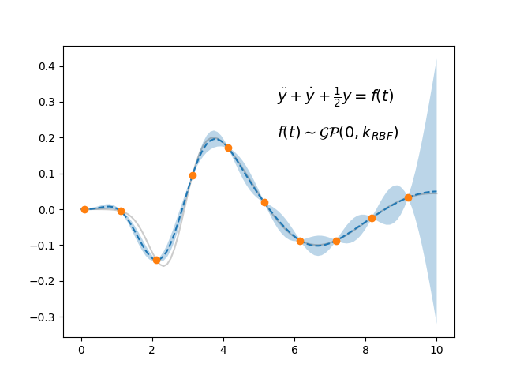
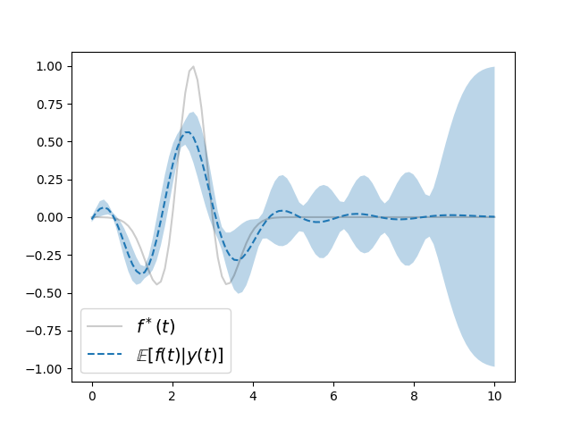

Note
Click here to download the full example code
Latent Force Models 2¶
- 
- 
import numpy as np
import matplotlib.pyplot as plt
from scipy.linalg import cholesky, cho_solve
from sklearn.gaussian_process.kernels import RBF
from pydygp.kernels import LFMOrder2Kernel, WhiteKernel
from pydygp.gaussian_process import MultioutGaussianProcessRegressor
from scipy.integrate import odeint
C = [0.5]
D = [1.0]
S = [1.0]
A = np.array([[0., 1.],
[-D[0], -C[0]]])
def f(t):
z = (t - 2.5)/0.5
return np.exp(-.5*z**2)*(1-z**2)
def dXdt(X, t):
v = A.dot(X)
v[1] += S[0]*f(t)
return v
ttdense = np.linspace(0., 10., 100)
sol = odeint(dXdt, [0., 0.], ttdense)
tt = ttdense[1::10]
Y = sol[1::10, 0]
vecY = Y.T.ravel() # vectorisation of Y
kernel = LFMOrder2Kernel(C=C, D=D, S=S)
lfm = MultioutGaussianProcessRegressor(kernel)
# Predicted value and std of y
ypred, ystd = lfm.predict(ttdense[:, None], return_std=True)
# Cholesky decomp of Cov{y}
Cyy = lfm.kernel(tt[:, None])
Cyy[np.diag_indices_from(Cyy)] += lfm.alpha
Lyy = np.linalg.cholesky(Cyy)
Cyy_ = lfm.kernel(tt[:, None], Y=ttdense[:, None])
Cy_y_ = lfm.kernel(ttdense[:, None])
ypred = Cyy_.T.dot(cho_solve((Lyy, True), vecY))
Cyy_ = Cy_y_ - Cyy_.T.dot(cho_solve((Lyy, True), Cyy_))
ystd = np.sqrt(np.diag(Cyy_)+1e-5)
# Covar {y, f}
Cyf = kernel.lf_crosscov(tt[:, None], ttdense[:, None])
Cff = RBF()(ttdense[:, None])
Cf_y = Cff - Cyf[..., 0, 0].T.dot(cho_solve((Lyy, True), Cyf[..., 0, 0]))
fpred = Cyf[..., 0, 0].T.dot(cho_solve((Lyy, True), vecY))
fstd = np.sqrt(np.diag(Cf_y))
fig, ax = plt.subplots()
ax.fill_between(ttdense, ypred + ystd, ypred - ystd,
alpha=0.3)
ax.plot(ttdense, sol[:, 0], 'k-', alpha=0.2)
ax.plot(ttdense, ypred, '--')
ax.plot(tt, Y, 'o')
ax.annotate(r'$\ddot{y} + \dot{y} + \frac{1}{2}y = f(t)$',
xy=(5.5, .3), fontsize=14)
ax.annotate(r'$f(t) \sim \mathcal{GP}(0, k_{RBF})$',
xy=(5.5, .2), fontsize=14)
fig2, ax2 = plt.subplots()
ax2.plot(ttdense, f(ttdense), 'k-', alpha=0.2,
label=r'$f^*(t)$')
ax2.fill_between(ttdense, fpred + fstd, fpred - fstd,
alpha=0.3)
ax2.plot(ttdense, fpred, '--',
label=r'$\mathbb{E}[f(t)|y(t)]$')
ax2.legend(loc=3, fontsize=14)
plt.show()
Total running time of the script: ( 0 minutes 0.123 seconds)